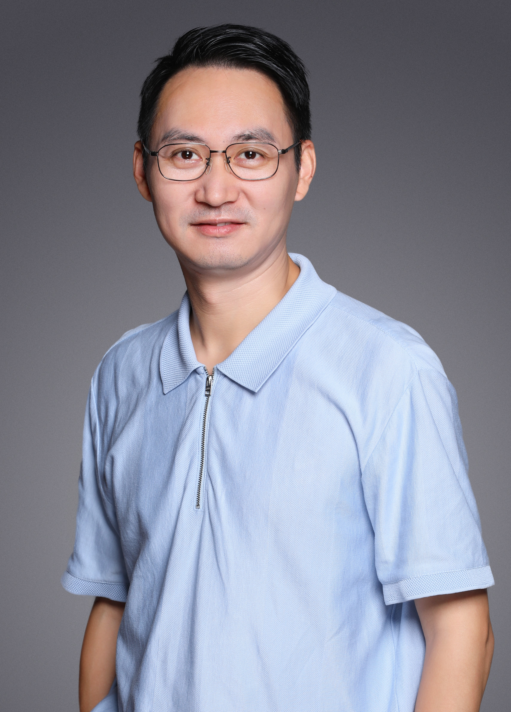
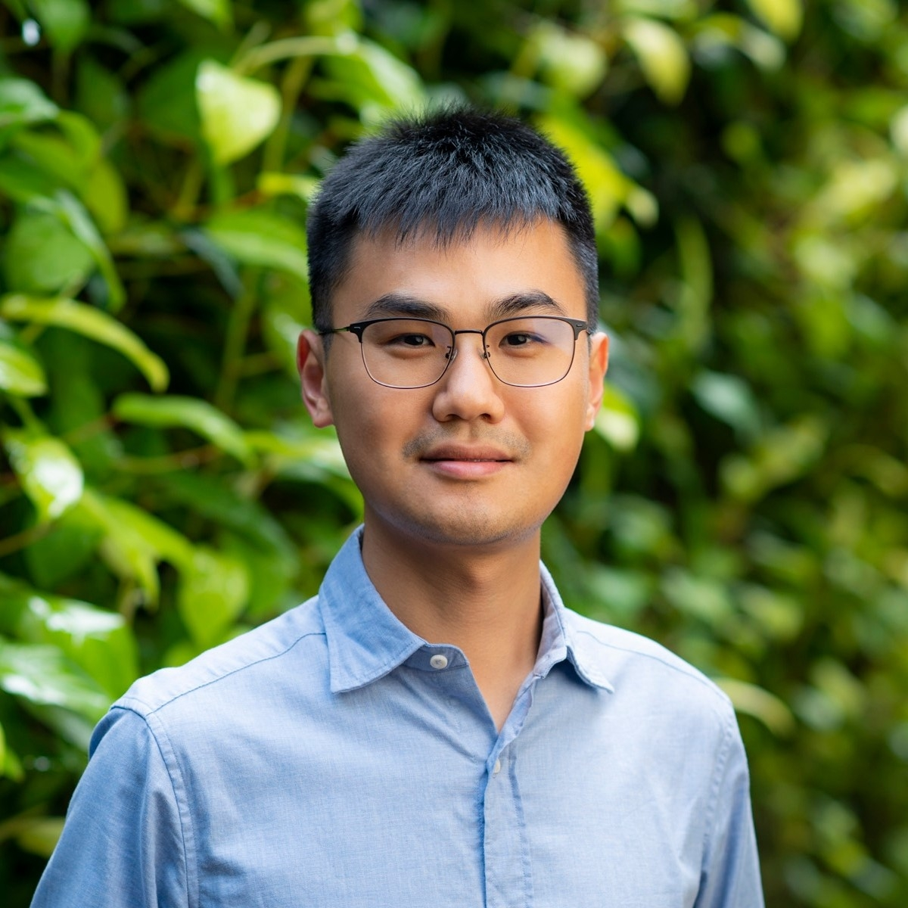
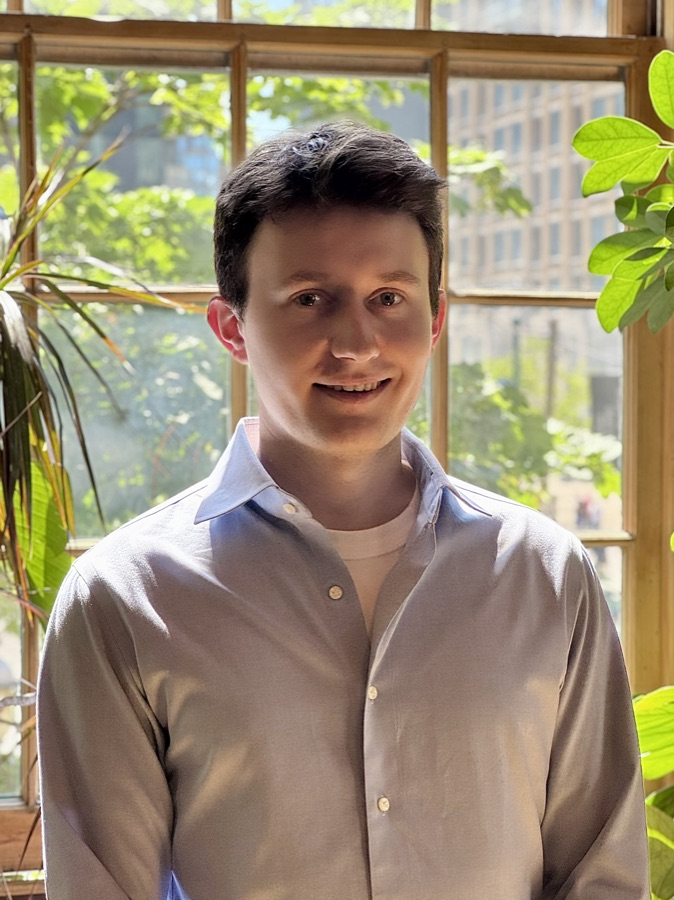
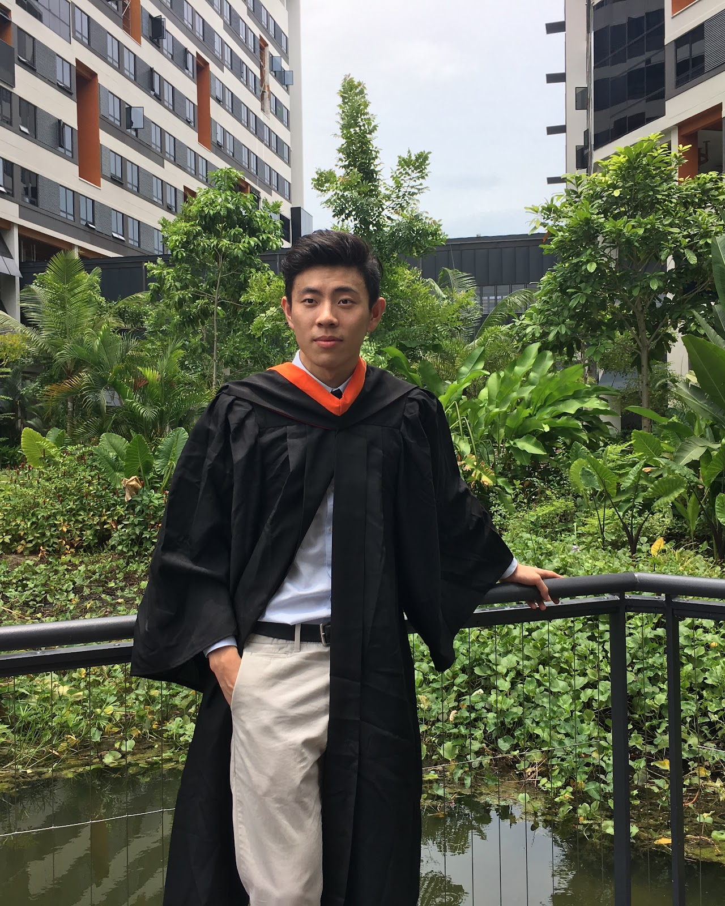

INSEAD
Stephen E. Chick
Professor of Technology and Operations Management
Adaptive clinical trials, health innovation portfolios, and simulation-based healthcare decisions.
Working with colleagues across healthcare operations, AI, simulation, decision-making, and human wellbeing.
7 collaborators
INSEAD
Professor of Technology and Operations Management
Adaptive clinical trials, health innovation portfolios, and simulation-based healthcare decisions.

Fudan University
Associate Professor of Marketing; Vice Department Chair
Consumer culture, human wellbeing, marketization, and institutional influences on markets.

Nanyang Technological University
Assistant Professor of Operations Management
AI-assisted healthcare, screening and triage, and biopharmaceutical analytics.
Fudan University
PhD Student; Intern at Tencent Hunyuan
Large language models, uncertainty quantification, and decision making under uncertainty.

University of Toronto
PhD Student in Operations Management and Statistics
Healthcare operations and AI markets.

Shandong University
Tenure-Track Associate Researcher
Monte Carlo simulation, stochastic optimization, data-driven analytics, and healthcare.

Fudan University
Associate Professor
Data-driven optimization, predictive and prescriptive analytics, and healthcare operations.
For research collaboration enquiries related to decision intelligence, simulation, or healthcare operations, get in touch with Zaile.
Get in touch